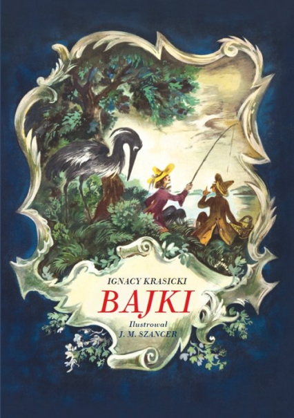

Bajki Ignacego Krasickiego |
||
| Strona główna | Ignacy Krasicki to polski poeta, prozaik, publicysta oraz komediopisarz. Urodził się w Dubiecku 3 lutego 1735 roku, a zmarł w Berlinie 14 marca 1801 roku. Od 1767 roku był biskupem warmińskim, a następnie, w 1795 roku został arcybiskupem gnieźnieńskim. Wywodził się ze zubożałej szlachty magnackiej – ród herbu Rogala. Do jego dzieł należą: bajki, wiersze, powieści, poematy heroikomiczne, satyry, prace naukowe i encyklopedyczne. Najsłynniejsze dzieła: „Monachomachia”, „Bajki i przypowieści”, „Myszeida” i „Kazania”. Pod pseudonimem Michał Mowiński wydał komedie „Solenizant”, „Łgarz” i „Statysta”. Jego utwory posiadały charakter moralizatorski i cechowały się ponadczasową ironią. |
 |
| Lew i zwierzęta |
||
| Bryła lodu i kryształ |
||
| Potok i rzeka |
||
| Autorzy: Norbert Bańka & Jakub Drywa, klasa: 2K, źródło tekstów: link , Bajki Ignacy Krasicki |
||